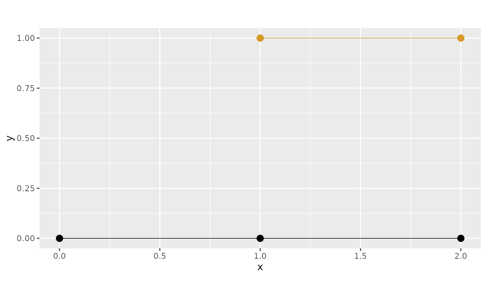

![[Deprecated]](figures/lifecycle-deprecated.svg)
graph_components is
deprecated. metric_graph now handles disconnected graphs directly:
construct it with check_connected = FALSE, then use
mg$get_components() to obtain a list of per-component
metric_graph objects, mg$which_component(XY) to route spatial
points, and mg$plot(components = TRUE) to colour the components.
Distance methods (compute_geodist, compute_resdist,
compute_laplacian) and SPDE machinery (spde_precision,
sample_spde, graph_lme, ...) all work on disconnected
metric_graph objects natively — precision matrices come out
block-diagonal by construction.
Value
Object of R6Class for creating metric graph components.
Details
A list of metric_graph objects (representing the different
connected components in the full graph) created from vertex and edge matrices,
or from an sp::SpatialLines object where each line is representing and edge.
For more details, see the vignette:
vignette("metric_graph", package = "MetricGraph")
Public fields
graphsList of the graphs representing the connected components.
nThe number of graphs.
sizesNumber of vertices for each of the graphs.
lengthsTotal edge lengths for each of the graphs.
nE_totalTotal number of edges across all components.
edge_offsetsInteger vector of length
ngiving the cumulative number of edges in components before each one. The global edge number of local edgeein componentkisedge_offsets[k] + e. Create metric graphs for connected components
Methods
Method new()
Usage
graph_components$new(
edges = NULL,
V = NULL,
E = NULL,
by_length = TRUE,
edge_weights = NULL,
...,
lines = deprecated()
)Arguments
edgesA list containing coordinates as
m x 2matrices (that is, ofmatrixtype) or m x 2 data frames (data.frametype) of sequence of points connected by straightlines. Alternatively, you can also prove an object of typeSpatialLinesDataFrameorSpatialLines(fromsppackage) orMULTILINESTRING(fromsfpackage).Vn x 2 matrix with Euclidean coordinates of the n vertices.
Em x 2 matrix where each row represents an edge.
by_lengthSort the components by total edge length? If
FALSE, the components are sorted by the number of vertices.edge_weightsEither a number, a numerical vector with length given by the number of edges, providing the edge weights, or a
data.framewith the number of rows being equal to the number of edges, where...Additional arguments used when specifying the graphs
lines- Use
edgesinstead. vertex_unitThe unit in which the vertices are specified. The options are 'degree' (the great circle distance in km), 'km', 'm' and 'miles'. The default is
NULL, which means no unit. However, if you setlength_unit, you need to setvertex_unit.length_unitThe unit in which the lengths will be computed. The options are 'km', 'm' and 'miles'. The default is
vertex_unit. Observe that ifvertex_unitisNULL,length_unitcan only beNULL. Ifvertex_unitis 'degree', then the default value forlength_unitis 'km'.longlatIf TRUE, then it is assumed that the coordinates are given. in Longitude/Latitude and that distances should be computed in meters. It takes precedence over
vertex_unitandlength_unit, and is equivalent tovertex_unit = 'degree'andlength_unit = 'm'.toleranceVertices that are closer than this number are merged when constructing the graph (default = 1e-10). If
longlat = TRUE, the tolerance is given in km.
Method edge_to_component()
Map global edge numbers to component indices. Each edge in the disconnected graph has a unique global edge number; this method returns the component each edge belongs to.
Method as_metric_graph()
Combine all components into a single (disconnected)
metric_graph object via fast in-memory stacking.
Edges keep their relative order within each component, and the
.edge_number of every observation is shifted by the cumulative
edge count of preceding components. The resulting graph carries
a disconnected = TRUE flag (queryable via
metric_graph$is_disconnected()); calling
add_observations() on the returned graph is disallowed because
the user-facing edge numbering is no longer the per-component
one — add observations to the original graph_components and
call as_metric_graph() again.
Call this method explicitly before passing to repeated
downstream operations (e.g., graph_lme, graph_spde,
sample_spde) to amortise the assembly cost across calls.
Method which_component()
For each spatial point, determine which component it belongs to. The component is the one whose nearest network location is closest in Euclidean distance to the point.
Method add_observations()
Add observations to the components. Mirrors
metric_graph$add_observations. For data_coords = "spatial",
each observation is routed to the component whose nearest network
location is closest to it. For data_coords = "PtE", the data
specifies a global edge_number (in 1:self$nE_total) and the
component is inferred automatically from it.
Usage
graph_components$add_observations(
data = NULL,
edge_number = "edge_number",
distance_on_edge = "distance_on_edge",
coord_x = "coord_x",
coord_y = "coord_y",
data_coords = c("PtE", "spatial"),
group = NULL,
normalized = FALSE,
clear_obs = FALSE,
verbose = 1,
suppress_warnings = FALSE,
...
)Arguments
dataA
data.frame, list,sfobject, orSpatialPointsDataFramewith the observations.edge_numberName of the (global) edge-number column. Default is
"edge_number".distance_on_edgeName of the distance-on-edge column. Default is
"distance_on_edge".coord_xName of the x-coordinate column. Default is
"coord_x".coord_yName of the y-coordinate column. Default is
"coord_y".data_coordsEither
"PtE"(the convention is then(edge_number, distance_on_edge)with global edge numbering) or"spatial".groupOptional grouping variable, see
metric_graph$add_observations.normalizedIf TRUE, distances are assumed normalized to (0,1).
clear_obsIf TRUE, all existing observations are cleared first.
verboseVerbosity level.
suppress_warningsIf TRUE, warnings from the per-component add_observations are suppressed.
...Additional arguments forwarded to each component's
add_observationsmethod.
Method get_data()
Combine observations from all components.
Returns a single data structure with an additional .component
column indicating which component each row belongs to.
Usage
graph_components$get_data(
group = NULL,
format = c("tibble", "sf", "sp", "list"),
drop_na = FALSE,
drop_all_na = TRUE
)Method get_PtE()
Get the (edge_number, distance_on_edge) pairs for the observations across all components, using global edge numbering.
Method coordinates()
Convert between graph coordinates (global
edge_number, distance_on_edge) and spatial coordinates.
Method compute_geodist()
Compute geodesic distances per component. The
geodesic distance between vertices in different components is
infinite, so the per-component computation gives well-defined
results. The distances are stored on each component's
metric_graph object (in geo_dist); when as_metric_graph()
is subsequently called, they are stacked into a combined
distance matrix with Inf cross-component entries.
Method compute_resdist()
Compute resistance distances per component.
Resistance distance is undefined (infinite) between vertices in
different components, so per-component computation is the only
way to get well-defined values on a disconnected graph.
Stacking via as_metric_graph() produces a combined matrix
with Inf cross-component entries, making
graph_lme(model = "isoExp") and similar isotropic models
fit per-component automatically.
Method compute_laplacian()
Compute the (weighted) graph Laplacian per
component. The combined Laplacian on the disjoint union is
block-diagonal in the per-component Laplacians, so
as_metric_graph() simply stacks them via Matrix::bdiag().
Method plot_function()
Plot a function on the components. Mirrors
metric_graph$plot_function. When supplying newdata, it must
include .edge_number (global edge numbering) and
.distance_on_edge; the component for each row is inferred from
the global edge number.
Usage
graph_components$plot_function(
data = NULL,
newdata = NULL,
group = 1,
type = c("ggplot", "plotly"),
continuous = TRUE,
p = NULL,
...
)Arguments
dataColumn name of the stored observations to plot.
newdataOptional
metric_graph_datawith.edge_number(global),.distance_on_edge, and the value column.groupGroup identifier passed to each component.
typePlot type:
"ggplot"or"plotly".continuousSee
metric_graph$plot_function.pOptional existing plot to add to.
...Additional arguments forwarded to each component's
plot_function.
Method plot()
Plots all components.
Arguments
edge_colorsA 3 x nc matrix with RGB values for the edge colors to be used when plotting each graph.
vertex_colorsA 3 x nc matrix with RGB values for the edge colors to be used when plotting each graph.
dataOptional column name of the stored observations to plot. Components without that column are skipped.
...Additional arguments for plotting the individual graphs.
Examples
library(sp)
edge1 <- rbind(c(0, 0), c(1, 0))
edge2 <- rbind(c(1, 0), c(2, 0))
edge3 <- rbind(c(1, 1), c(2, 1))
edges <- list(edge1, edge2, edge3)
suppressWarnings(graphs <- graph_components$new(edges))
#> Starting graph creation...
#> LongLat is set to FALSE
#> Creating edges...
#> Setting edge weights...
#> Computing bounding box...
#> Setting up edges
#> Merging close vertices
#> Total construction time: 0.25 secs
#> Creating and updating vertices...
#> Storing the initial graph...
#> Computing the relative positions of the edges...
#> Extracting components...
#> Number of components: 2
#> Constructing graphs...
#> Processing component 1
#> Starting graph construction...
#> Starting graph creation...
#> LongLat is set to FALSE
#> Creating edges...
#> Setting edge weights...
#> Computing bounding box...
#> Setting up edges
#> Merging close vertices
#> Total construction time: 0.25 secs
#> Creating and updating vertices...
#> Storing the initial graph...
#> Computing the relative positions of the edges...
#> Processing component 2
#> Starting graph construction...
#> Starting graph creation...
#> LongLat is set to FALSE
#> Creating edges...
#> Setting edge weights...
#> Computing bounding box...
#> Setting up edges
#> Merging close vertices
#> Total construction time: 0.24 secs
#> Creating and updating vertices...
#> Storing the initial graph...
#> Computing the relative positions of the edges...
graphs$plot()
